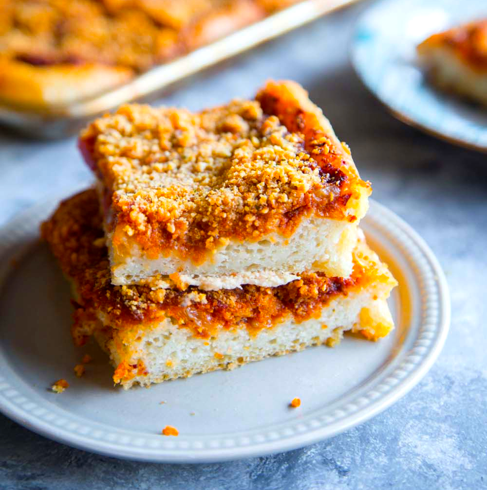

Sicilian Christmas Pizza

Description
Topping a thick-crust pizza with bread crumbs might sound like a strange idea, but it really is the crispy, cheesy secret sauce behind this Sicilian Christmas Pizza. Well, that and the actual sauce of onion and anchovies — ingredients you might want to keep secret from guests. Also key is the extremely sticky dough, which bakes into a feather-light, spongy crust that contrasts perfectly with the crumbly topping. Garnish with the customary dried oregano if desired.
Ingredients
For the Dough:
- 2 cups warm water (100 to 110 degrees F (40 to 45 degrees C))
- 1 (.25 ounce) package active dry yeast
- 1 ½ teaspoons kosher salt
- 1 teaspoon white sugar
- 3 tablespoons olive oil
- 4 ⅔ cups all-purpose flour, or more as needed
For the Sauce:
- 2 tablespoons olive oil
- 2 large yellow onions, diced
- salt to taste
- 1 teaspoon red pepper flakes
- 1 teaspoon freshly ground black pepper
- 1 tablespoon tomato paste
- 1 teaspoon dried oregano
- 9 oil-packed anchovy fillets, drained and 1 tablespoon oil reserved
- 1 ½ cups marinara sauce
- ¼ cup water
For the Crumb Topping:
- ¾ cup fine plain dry bread crumbs
- 1 cup grated Pecorino Romano cheese
- 6 tablespoons olive oil, divided
For the Pizza:
- 3 ounces shredded mozzarella cheese
- 3 ounces shredded aged provolone cheese
Steps
- Pour warm water into the bowl of a stand mixer fitted with the dough hook. Sprinkle yeast on top and let bloom. Add salt, sugar, olive oil, and flour. Knead, scraping down sides as necessary, until dough is very elastic and sticky, 6 to 7 minutes. Cover and let rise in a warm place until doubled in size, about 90 minutes.
- Heat olive oil over medium heat. Add onions and salt. Saute, stirring occasionally, until onions soften, sweeten, and turn translucent, 6 or 7 minutes. Add red pepper flakes, black pepper, tomato paste, oregano, and anchovies; mix until anchovies dissolve. Add marinara sauce, rinse out the container with water, and add the water. Stir and let simmer on medium-low heat until flavors come together, about 20 minutes.
- Preheat the oven to 400 degrees F (200 degrees C).
- Combine bread crumbs and Pecorino Romano cheese in a bowl; toss together with a fork. Add the reserved anchovy oil and 2 tablespoons olive oil. Mix until bread crumbs are well moistened.
- Generously coat a rimmed 13x18-inch sheet pan with up to 3 tablespoons olive oil. Oil your hands and turn dough out onto pan. Pull, stretch, and press it to the sides of the pan, pausing to let dough rest whenever it shrinks back too quickly.
- Spoon sauce over the dough and spread up to about 1/2 inch from the edges. Add mozzarella and provolone cheeses. Sprinkle bread crumb mixture evenly on top; do not press down. Drizzle remaining olive oil on top.
- Bake in the preheated oven until pizza is well browned is bottom is cooked, about 35 minutes. Bake for as as long as you can without the crumbs on top burning so that the crust cooks as much as possible.
- Slide pizza onto a cooling rack to prevent the bottom from getting soggy. Transfer to a cutting board once cooled.